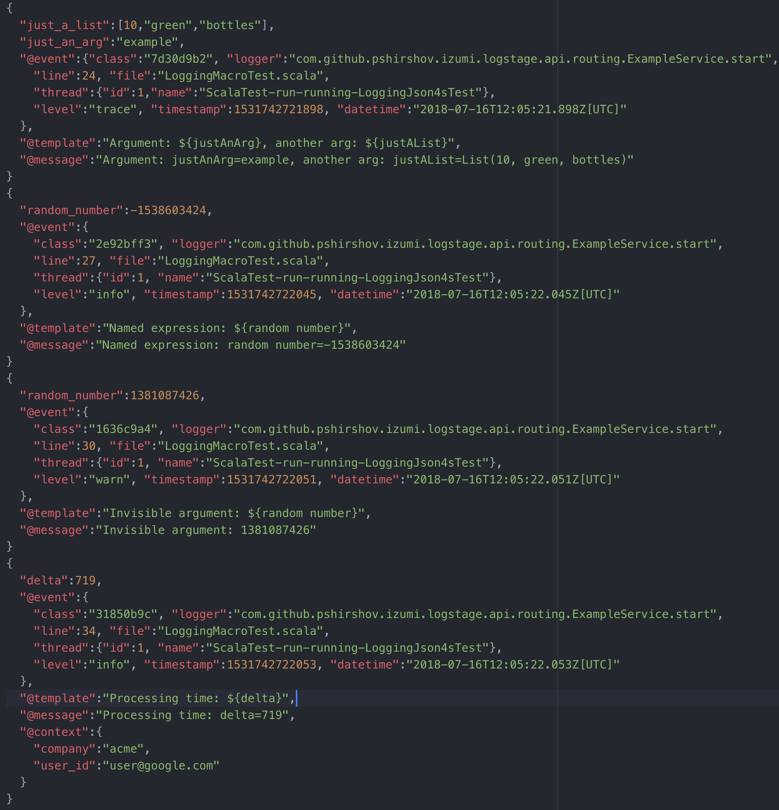

LogStage
LogStage is a zero-cost structural logging framework.
Key features:
- LogStage extracts structure from ordinary string interpolations in your log messages with zero changes to code.
- LogStage uses macros to extract log structure, its faster at runtime than typical reflective structural logging frameworks,
- Log contexts
- Console, File and SLF4J sinks included, File sink supports log rotation,
- Human-readable output and JSON output included,
- Method-level logging granularity. Can configure methods
com.example.Service.startandcom.example.Service.doSomethingindependently, - Slf4J adapters: route legacy Slf4J logs into LogStage router
Overview
The following snippet:
class ExampleService(logger: IzLogger) {
val justAnArg = "example"
val justAList = List[Any](10, "green", "bottles")
logger.trace(s"Argument: $justAnArg, another arg: $justAList")
logger.info(s"Named expression: ${Random.nextInt() -> "random number"}")
logger.warn(s"Invisible argument: ${Random.nextInt() -> "random number" -> null}")
val ctxLogger = logger("userId" -> "user@google.com", "company" -> "acme")
val delta = Random.nextInt(1000)
ctxLogger.info(s"Processing time: $delta")
}
Will look like this in string form:

And like this in JSON:

Note:
- JSON formatter is type aware!
- Each JSON message contains
@classfield with holds a uniqueevent classidentifier. All events produced by the same source code line will share the sameevent class.
Dependencies
libraryDependencies += Izumi.R.logstage_core
libraryDependencies ++= Seq(
// file sink
Izumi.R.logstage_sink_file
// json output
, Izumi.R.logstage_rendering_circe
// router from Slf4j to LogStage
, Izumi.R.logstage_adapter-slf4j
)
or
val izumi_version = "0.6.0-SNAPSHOT"
// LogStage API, you need it to use the logger
libraryDependencies += "com.github.pshirshov.izumi.r2" %% "logstage-core" % izumi_version
// LogStage machinery
libraryDependencies ++= Seq(
// file sink
"com.github.pshirshov.izumi.r2" %% "logstage-sink-file" % izumi_version
// json output
, "com.github.pshirshov.izumi.r2" %% "logstage-rendering-circe" % izumi_version
// router from Slf4j to LogStage
, "com.github.pshirshov.izumi.r2" %% "logstage-adapter-slf4j" % izumi_version
)
If you’re not using sbt-izumi-deps plugin.
Basic setup
import logstage._
import logstage.circe._
val jsonSink = ConsoleSink.json(prettyPrint = true)
val textSink = ConsoleSink.text(colored = true)
val sinks = List(jsonSink, textSink)
val logger: IzLogger = IzLogger(Trace, sinks)
val contextLogger: IzLogger = logger(Map("key" -> "value"))
logger.info("Hey")
// Hey; @type=const
contextLogger.info(s"Hey")
// {key=value} Hey
0.6.0*